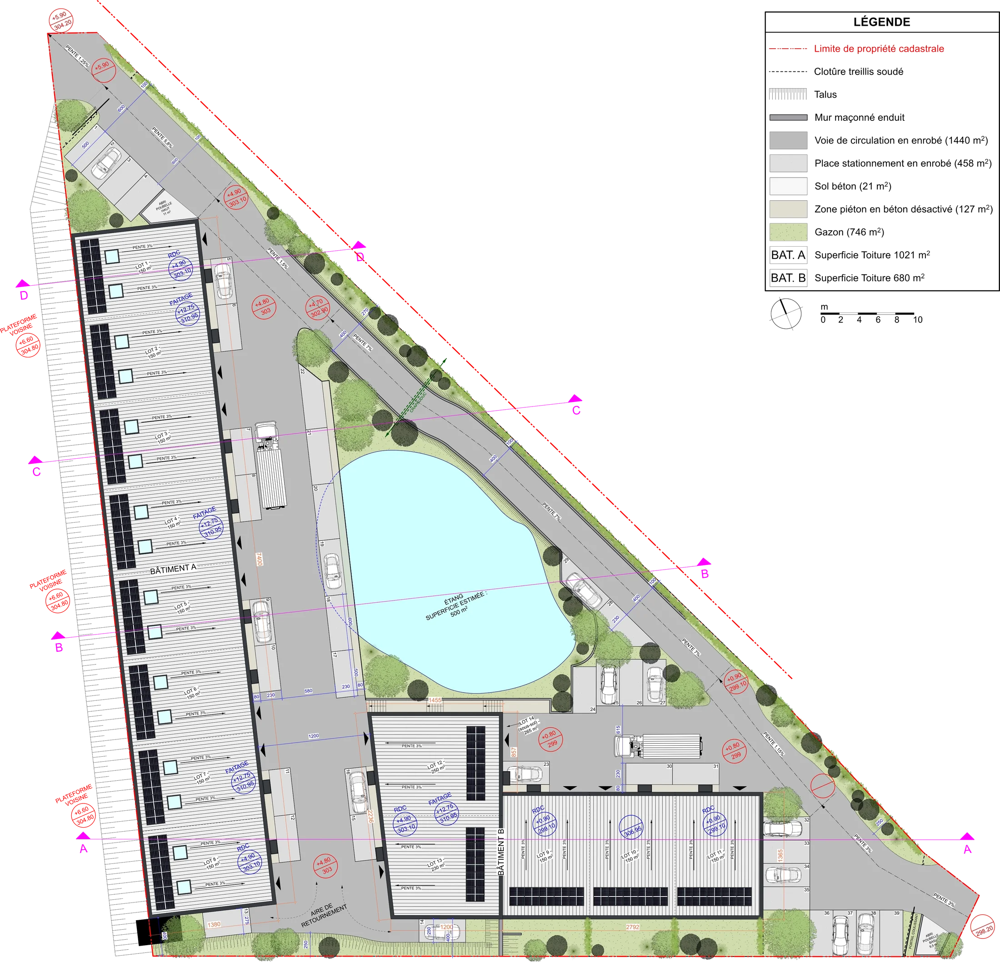
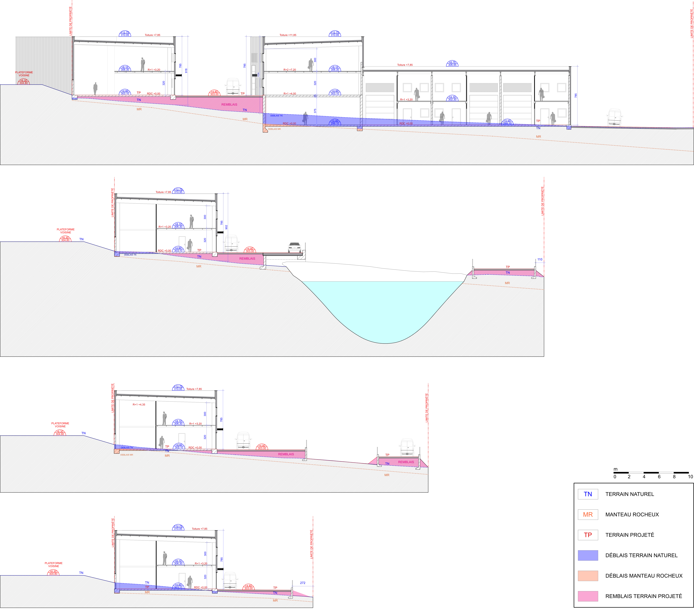
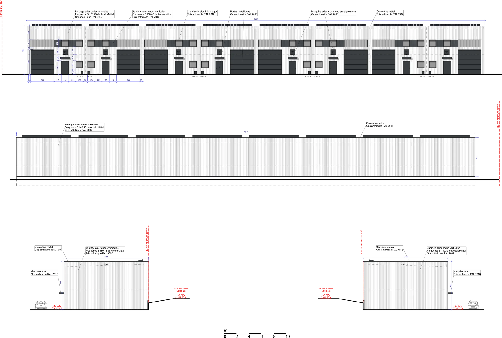
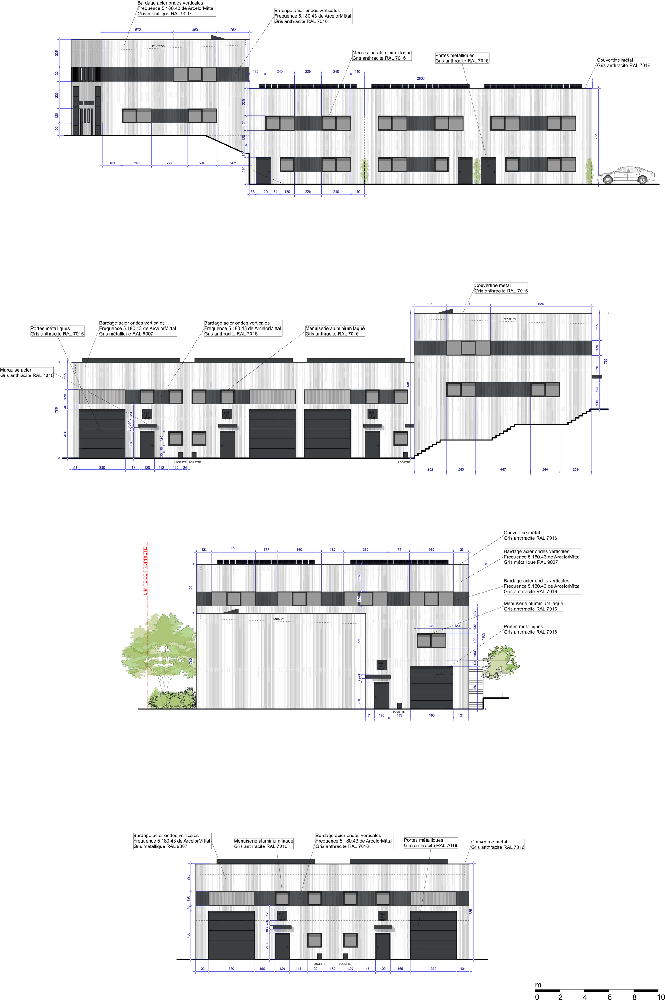

Construction d'un parc d'activité à Taluyers, Rhône
Statut : livré (Permis de Construire) · Phase : PRO · Surface : 1 250 m²
Ce projet porte sur la construction d'un parc d'activité à Taluyers, Rhône, pour le compte de Solymmo. L'ensemble regroupe plusieurs bâtiments à usage professionnel, organisés autour d'une desserte commune, avec une attention portée au traitement des façades et à l'intégration paysagère du site.



